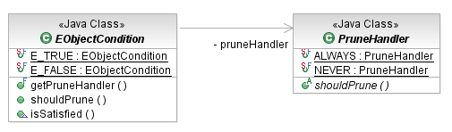

An EMF dataset is naturally hierarchically structured. Queries frequently traverse this tree content in search of objects. One technique for omptimizing queries is to detect when a branch of the tree cannot contain positive results, so that it may be skipped entirely. This technique is called pruning.
Any EObjectCondition can be configured with a PruneHandler that tells the condition when to prune the search tree. The default prune handler for a condition is NEVER which, as the name suggests, never prunes.

[as SVG]
A query will check after each object that is encountered, and either accepted or rejected, whether to prune that object's subtree.
// search for books by Dickens, only in branches in the west end of the city
// because those are geographically closest
// case-insensitive substring match (hopefully we don't have a Weston Branch East)
final EObjectCondition isWest = new EObjectAttributeValueCondition(
EXTLibraryPackage.Literals.LIBRARY__NAME,
new SubStringValue("west", false);
PruneHandler pruner = new PruneHandler() {
public boolean shouldPrune(EObject object) {
// any branch not in the west cannot contain branches that are.
// Also, anything that isn't a library can't contain branches
return !isWest.isSatisfied(object);
}};
// look for libraries in the west. Wrap the condition that we already have
// so that we can apply the prune-handler. Note that this wrapping is only
// necessary because our prune-handler uses the same condition
EObjectCondition libraryCond = new EObjectConditionAdapter(isWest, pruner);
// find books by Dickens
Writer dickens = getWriter("Charles Dickens");
EObjectCondition bookCond = new EObjectReferenceValueCondition(
EXTLibraryPackage.Literals.BOOK__AUTHOR, isDickens);
// search from the root of the library hierarchy
Library mainBranch = getMainBranch();
// the nested query with the prune handler gets the western libraries to search
IQueryResult result = new SELECT(
new FROM(new SELECT(
new FROM(mainBranch), new WHERE(libraryCond))),
new WHERE(bookCond)).execute();
Copyright (c) 2000, 2007 IBM Corporation and others. All Rights Reserved.